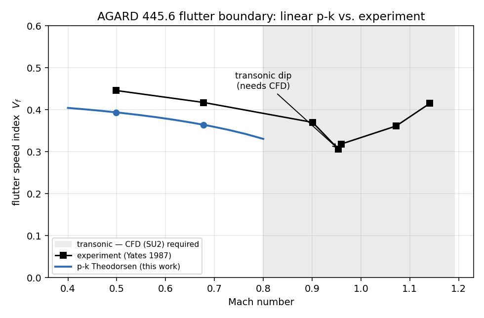
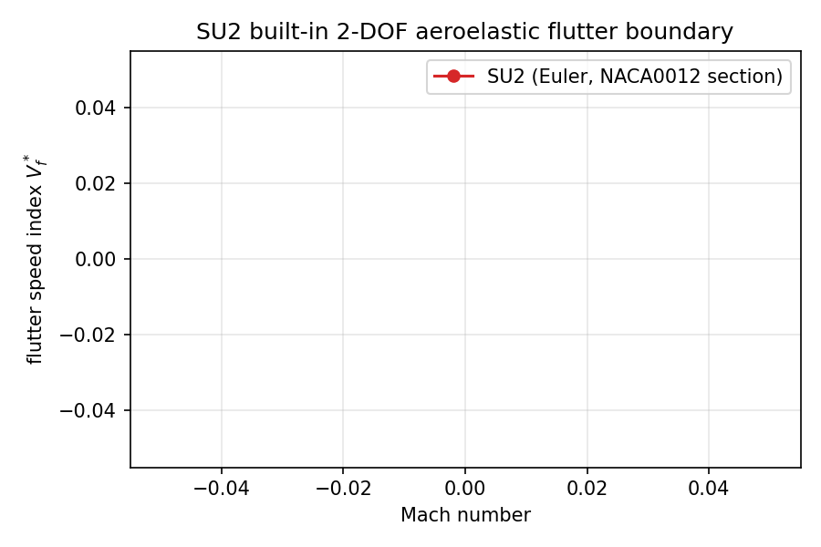
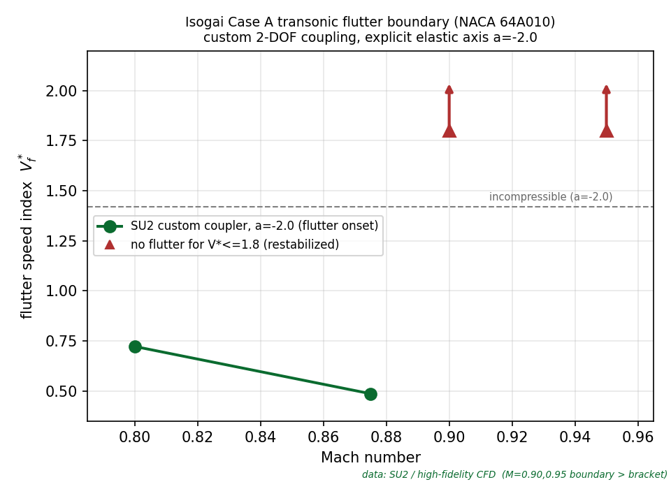
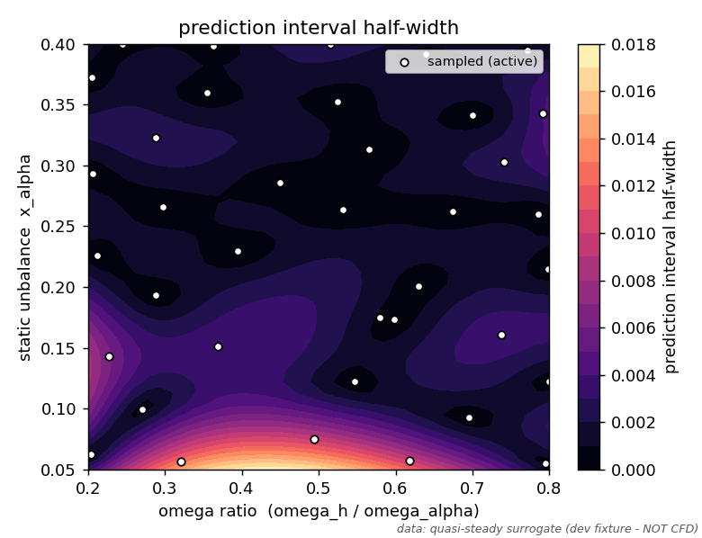
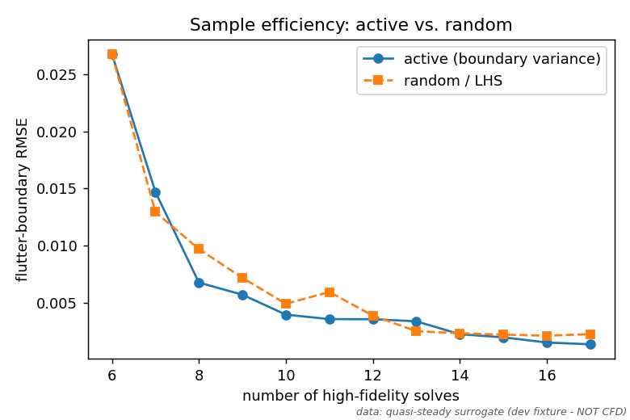

The problem
A single high fidelity coupled CFD and structural flutter point can cost hours of cluster time, and clearing a flight envelope needs hundreds of them. That cost shuts the door on interactive design queries, uncertainty aware margins, and flutter constrained optimization.
Most reduced order models accelerate the reconstruction of the flow field. What an engineer actually wants is the stability boundary itself, the flutter speed index and damping margin as a function of the flight and design parameters. So that is what I chose to learn directly.

What I built
An end to end pipeline that learns the flutter boundary from an actively sampled SU2 fluid structure interaction campaign, and answers queries in well under a millisecond at a fraction of the sampling cost.
- A high fidelity SU2 aeroelastic backend, both the built in two degree of freedom solver and a custom partitioned coupler with a settable elastic axis.
- An active learning sampler that places each expensive solve where it most sharpens the boundary.
- A Gaussian process operator trained on a bounded, tanh squashed growth-rate field, which keeps the boundary well posed with few samples.
- Distribution free conformal calibration, so the uncertainty band has a guaranteed coverage rather than a hopeful one.


Uncertainty and efficiency
The two hypotheses the framework is built to test are accuracy with calibrated uncertainty, and sample efficiency. The conformal band tracks the true boundary, and active learning reaches it in far fewer high fidelity solves than random sampling.


Honest status
I am careful about what is earned. The linear subsonic result is validated. The two dimensional SU2 transonic runs are real CFD. The full reduced order, active learning, and uncertainty machinery is validated end to end, including on real coupled solves. The three dimensional AGARD wing path is built and runs, but is currently blocked on mesh fidelity, and I do not present any number there until it passes a steady validation ladder.